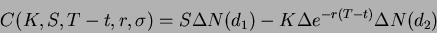

Next: Análisis de tendencia.
Up: De prácticas
Previous: Análisis de proyectos de
Índice General
Objetivo. Ver la evolución de los títulos de acciones y opciones que
tengamos. Modelo Black-Scholes.
Hoy en día no es extraño que una persona particular posea una pequeña cantidad
de acciones o de opciones. En esta práctica intentaremos hacer el seguimiento
de las rentabilidades de dichos títulos tratándo de anticipar posibles
cambios que nos indiquen pautas de compra o venta y así evitar riesgos. Aquí
haremos referencia al parqué de la bolsa madrileña por ser la que más
conicimientos poseeo. Para aquellas personas que conozcan la temática no
hace falta que se expliquen los conceptos. Para aquellos que no conozcan
los términos, el objetivo de la práctica son los conceptos de hoja de cálculo
y no los de economía financiera.
Para hacer el trabajo más fácil de hacer y de presentar se hará uso de
de cuatro hojas diferentes: una para las acciones, otra para las opciones,
otra para los cálculos de acciones y opciones y una cuarta para la salida
de gráficos.
El primer paso es crear un libro nuevo de StarCalc para lo que usaremos
el menú [Archivo], [Nuevo] y [Hoja de cálculo]. Una vez
creado el libro, comezaremos con la parte de acciones que es la más
fácil pues sólo se trata de controlar lo cotización diaria de los títulos.
La fórmula de Black-Scholes:

Next: Análisis de tendencia.
Up: De prácticas
Previous: Análisis de proyectos de
Índice General
Proyecto Cursos - LuCAS - http://lucas.hispalinux.es/htmls/cursos.html